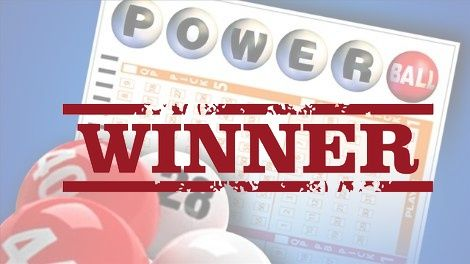

Watch the Special Report

Watch the Special Report
Part I — The Numbers
Every week, millions of Americans play Powerball, Mega Millions, and Cash4Life. Yet very few of them could tell you which numbers they played last month — or why they picked them in the first place.
The full presentation walks through how a simple statistical routine changes the way you choose, organize, and track every play. If you'd rather skip ahead, you can watch it right here — it explains everything on screen, step by step.
The Line Readers Keep Underlining
"You can't control which numbers are drawn. But you can absolutely control how you choose, organize, and track the numbers you play." — from the full presentation.
Editor's Note
This brief is an editorial summary of the presentation — educational material about lottery statistics and play organization. No method shown here or in the presentation can change the odds of a draw or guarantee a win.
Part II — Myths vs Facts
"A quick pick is just as good as any strategy."
FactEvery combination has the same odds of being drawn — but a quick pick gives you no structure, no record, and no plan. Tools like frequency analysis and wheeling systems don't change the odds; they change how organized and intentional every single play is.
"Past draws tell you absolutely nothing."
FactPast draws are public data, and they are exactly what frequency analysis maps: which numbers have appeared most and least often, and for how long. The presentation shows how to read that data in minutes instead of digging through it by hand.
"Playing with a method is only for people who buy hundreds of tickets."
FactWheeling systems were designed for the opposite reason — to organize a small number of plays systematically so they cover more combinations of your chosen numbers. The presentation shows how they work on an ordinary weekly budget.
Part III — Why This Matters Now
The full presentation covers the major U.S. lotteries side by side — the same games whose jackpots and draw times change every single week — and shows how one routine keeps all of them organized in one place.
What the Full Brief Reveals
How a smart number generator builds combinations in seconds, how frequency analysis flags hot and cold numbers, how live jackpots and draw times are tracked on one screen, and how daily picks, alerts, and saved plays keep every week organized — all demonstrated step by step.
It takes less time to watch than it does to stand in line for a ticket — see the full presentation here.
Part IV — Reader Letters
The letters below describe how readers organize their plays after watching the presentation. Individual experiences vary — no outcome is guaranteed for anyone.
"I used to grab a quick pick at the gas station without thinking twice. Now every play I make is written down, organized, and picked for a reason. It completely changed my relationship with the game."— Marcus R., 58 · Texas
"The frequency charts were the part that surprised me. I had been playing the same numbers for nine years and had never once looked at the actual data behind the draws."— Dana K., 46 · Florida
"I play the same budget I always did — the difference is that now I know exactly what I'm playing and why. It feels like a hobby with a system instead of a coin toss."— Tyler S., 62 · Ohio
Part V — Reader Questions
It's a statistical routine for organizing lottery plays, described step by step in the full presentation: frequency analysis, smart number generation, and wheeling systems, applied to the major U.S. lotteries.
The presentation compares the method with the two most common alternatives — quick picks and fixed "lucky numbers" — and explains, point by point, what sets a structured, data-driven routine apart. The differences are covered in detail in the full brief.
No — and be wary of anyone who says otherwise. Every lottery draw is random, and no tool can change the odds. What the method does is organize how you choose, track, and manage your plays instead of leaving everything to guesswork.
The presentation covers the five major U.S. draw games: Powerball, Mega Millions, Cash4Life, Lucky for Life, and Lotto America — with live jackpots and draw times for each one.
No. This is an independent analysis and organization tool. Tickets are always purchased through official lottery retailers in your state — the presentation never asks you to buy tickets through it.
Availability of the presentation may change over time. If the page is online now, the full brief can be watched today.
No. This is an independent publication and software tool. It is not affiliated with, endorsed by, or connected to Powerball, Mega Millions, or any state or multi-state lottery organization.
Yes. Lottery play is restricted to adults — 18 and older in most states, 19+ or 21+ in a few. This brief and the presentation are intended for adults of legal playing age only.
Watch the full presentation first — it explains the steps in order and what you need to know before organizing your first play. Everything starts from the button on this page.
No. The presentation is free to watch and no registration is required to press play.
Individual results vary and nothing here is guaranteed. Any purchase terms — including the 30-day money-back guarantee — are explained clearly inside the presentation before any decision is made.
Yes. No name, email, or personal information is required to watch the presentation. See the Privacy Policy linked at the bottom of this page for details.
It's short enough to watch in one sitting — most readers finish it in well under half an hour. It's best watched from the start, with the sound on.
About This Presentation
An editorial summary of the presentation — a statistical analysis and organization tool for U.S. lottery players. It exists to explain what the method is, where it comes from, and let you decide whether the full presentation is worth your time.
This is not financial or gambling advice. No statistical method changes the odds of a lottery draw or guarantees a prize. Individual results vary, and the lottery should never be treated as a way to make money or as a source of income.
Lottery games are for adults of legal playing age only — 18+ in most states. Set a budget and stick to it. If gambling stops being fun.
The full brief walks through the entire method on screen, from the first frequency chart to a finished, organized play. If this page is live, the presentation is free to watch today.
Free presentation · No registration · 18+ only